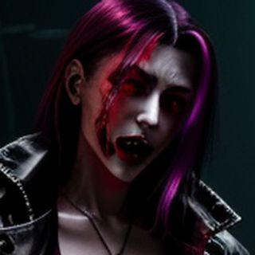
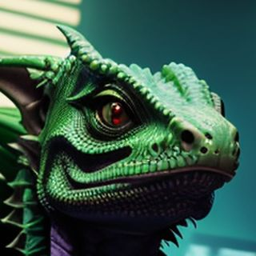
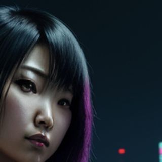

Brainstorm · people
Your portraits, cropped and blurred
Six of the generated images, cropped to the face. Same crop, three amounts of blur.
A
Soft focus
2.5 px blur and a dark vignette. Still recognisable.
Zero Kelvin

Mother Carmine
Deckard Voss

Basilisk
Gus the Noodle Guy

Yumi Sato
B
Camera grab
4 px blur, drained colour, green cast, scanlines, face-match box.
CAM-07
MATCH 91%
Zero Kelvin
CAM-11
PARTIAL 43%
Mother Carmine
CAM-15
MATCH 88%
Deckard Voss
CAM-19
NO MATCH
Basilisk
CAM-23
MATCH 76%
Gus the Noodle Guy
CAM-27
PARTIAL 58%
Yumi Sato
C
Heavy blur
9 px. Only colour and shape survive.
Zero Kelvin
Mother Carmine
Deckard Voss
Basilisk
Gus the Noodle Guy
Yumi Sato